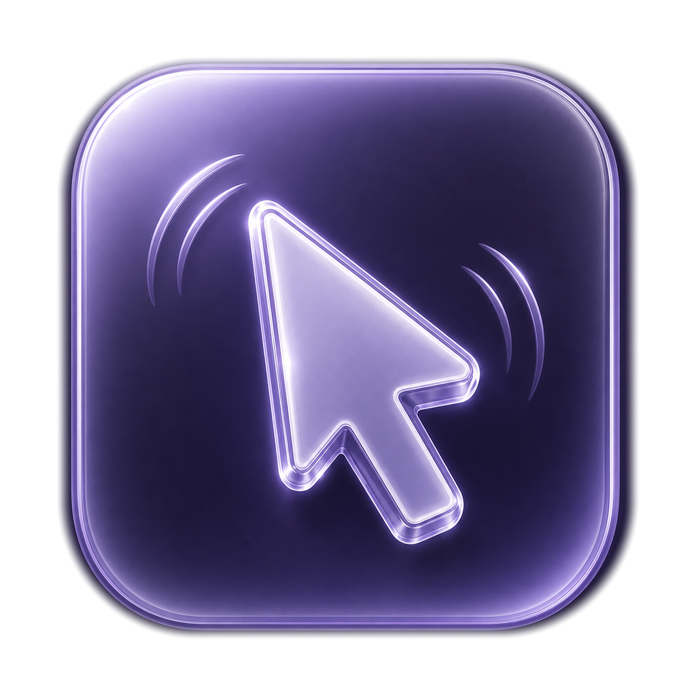
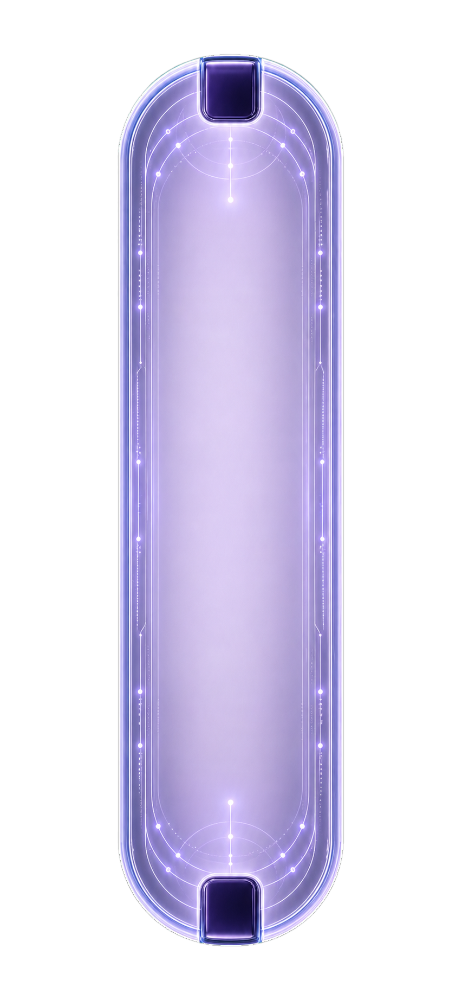

Gesture first
Shake in any direction and the input appears near your cursor.

Open source macOS utility for Codex users
Shake Cursor turns a quick mouse shake into a lightweight assistant at your cursor: draw a short fortune, ask a daily question, or create a calendar event from plain text.
No custom backend. Uses your local Codex Desktop session.

Shake in any direction and the input appears near your cursor.
Prompts are sent to your signed-in local Codex environment.
Ask, reflect, or create macOS Calendar events with clear time text.